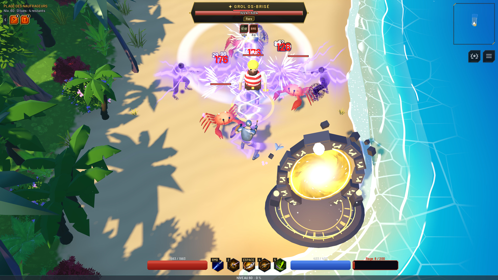
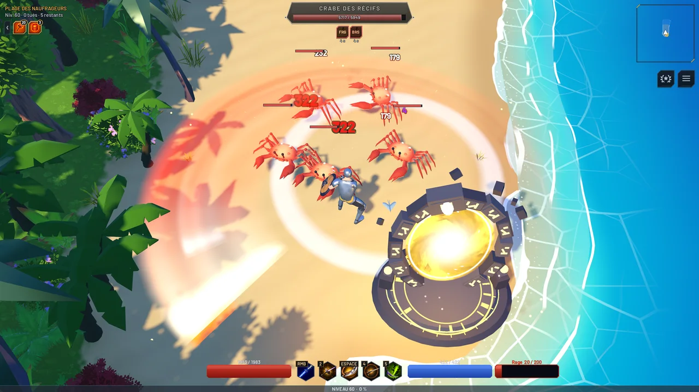
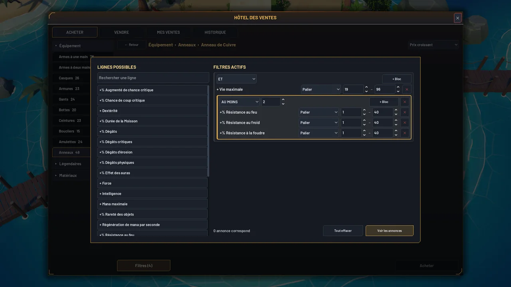
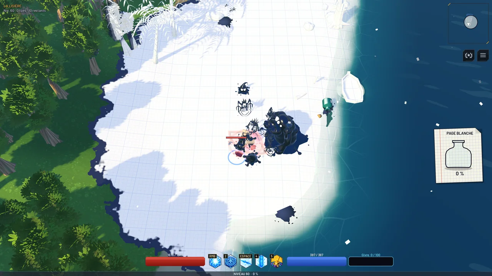

Blades, beams, auction house and the Ink league
Two melee families and your shadows, channelled beams, an auction house, the Ink league and the game in English.
Two new melee families with their shadows, channelled beams, an auction house, the Ink league, the game in English and plenty of polish. Have fun!
Slashes and thrusts
Melee now splits into two families. Slashes sweep an arc in front of you: the reworked Cleave, Cross Slash and Great Reaping, which knocks back everything it hits. Multistrikes replay the swing, alternating direction, each blow a little wider. Thrusts are a thin point that goes through: Thrust, Impale, Flurry of Thrusts, and two elemental thrusts, Thunder Thrust and Frost Pike.

Your shadows
A new stat: shadows. With every thrust, each one appears around the target — a translucent copy of your hero — and lands the same blow at the same moment, for 70% of the damage. One shadow takes the opposite side, two form a triangle with you, five surround the target. They come from the Twin Shadow and Pack of Shadows supports and from the new Master of Arms talent tree.

Channelled beams
Four beams to hold down — Ember, Frost, Lightning and Void — and a reworked Elemental Beam that changes element with its stacks. The beam stops on the first enemy: refraction then splits it towards other targets. Area of effect widens the beam, beam range lengthens it.

The auction house
When you create a character, you choose Trade or Solo. In Trade, the auction house opens from the right-hand menu: browse gear, legendaries and materials down to the base you want, compare every listing with what you wear, and line filters (AND, OR, AT LEAST) find the exact piece. You can sell your items and materials there too. The market is simulated for now.

The Ink league
The world loses its colour: blank pages of graph paper eat into some maps and release ink monsters. Bringing the colour back fills vials; the origami Crane settles at the refuge and uses them to open the Great Notebook, a map made entirely of paper whose origami you free with a splash of ink.

And also
The game is available in English. Game hints offer themselves without interrupting you, every class starts with a weapon, the icons of every item have been redone, the Codex tells you where to find each monster, and the graphics options gain SMAA, FSR 2 and a separate HUD scale.
Patch notes
Melee: slashes and thrusts
- Slashes: reworked Cleave, Cross Slash (two crossing slashes), Great Reaping (205°, strong knockback). Area of effect enlarges the blow; multistrikes replay the swing, alternating direction, each blow a little wider.
- Thrusts: a thin point that goes through — Thrust, Impale (+40% on the first enemy hit), Flurry of Thrusts (three points, uninterruptible), Thunder Thrust (arcs towards nearby enemies), Frost Pike (ice spikes bursting from the ground). Gangrenous Strike becomes a thrust.
- Shadows: a new stat. Each shadow appears around the target and lands the same thrust at the same moment, for 70% of the damage (1 shadow on the opposite side, 2 in a triangle, etc.). Thrusts have no multistrikes.
- Supports: Twin Shadow, Pack of Shadows, Sharpened Shadows, Reach, Wide Sweep, Windmill.
- New Master of Arms talent tree (shadows, reach, multistrikes); Master of Flow: major talents reworked (Shadow Dance, Unbroken Flow, Great Spin).
- Hero motions: animated thrusts and slashes, the hit timed to the swing and to attack speed. Dedicated sounds for every blow.
- Weapons in hand: blade pointing down, grip in the centre of the fist; the hero's fingers are shorter.
Channelled beams
- Ember Beam, Frost Beam, Lightning Beam, Void Beam; reworked Elemental Beam (the element changes with stacks, Convergence at 55%).
- The beam stops on the first enemy hit. Refraction (new stat): it splits from that enemy towards other targets, at half range; with no target, into mini-beams.
- Area of effect widens the beam; beam range is a separate stat.
- Supports: Refraction, Lens, Wide Beam, Overload, Steady Flow, Mobile Beam. Prism of Knowledge talent (Goddess of Knowledge).
- Visuals fully remade: luminous energy specific to each element.
Auction house (characters in Trade mode)
- At creation, every character chooses Trade or Solo (SSF). In Trade, an Auction house button appears in the right-hand menu.
- Buy: Gear, Legendaries, Materials → slot (weapon type) → base → listings as large icons with their price; hover to compare with the item you wear. A home page with search and recently viewed entries.
- Line filters: every possible line of the base, a min–max range filled from the chosen tier, nested AND, OR and AT LEAST n blocks.
- Sell items and materials (unit or total price, 10% tax), My sales (Collect all), History with spending, income and taxes. An in-game notice tells you when something sells.
- The market is simulated for now: fictional listings and buyers.
Ink league
- Blank pages of graph paper eat into some maps and release ink monsters; bringing colour back to the world fills vials.
- The origami Crane settles at the refuge: with the vials, it opens the Great Notebook, a map made entirely of paper whose origami you free with a splash of ink.
- INK branch of the Tree of the Lands, league cosmetics (trail, origami fox, portal), Ink title screen theme.
The game in English
- The whole game is translated: interface, skills, items, talents, dialogue, hints. The language is chosen in the options (menu or in game), with a suggested restart.
Game hints
- Hints now offer themselves discreetly on the left: Guide me starts the walkthrough, Got it closes it.
- New hints: equipping an item, a new skill slot, your first aura, the forge, the loot filter. All of them can be read in the Codex and replayed (Options → Game).
- Hints can be turned off per character. The movement controls are offered in game, after the introduction.
Characters and menus
- Every class starts with a level 1 plain weapon.
- Hero or heroine, equipment visible on the character.
- Character screen: weapon held on guard, Trade / SSF label, a bigger character; a cleaner creation screen.
- Codex: Bestiary tab (defeated monsters, animated model, where to find each monster); Equipment tab with the icon and card of each item; right-click to move the camera.
- Icons of every item base remade (bright stitched cloth, leather, metal, ash; one rank = one colour); four new belts. Skill and support icons are always framed.
Options
- Anti-aliasing as a single setting (FXAA, SMAA, TAA, MSAA 2x/4x/8x), FSR 1 / FSR 2 upscaling, a Details setting.
- Interface scale from 50 to 150%, and a separate HUD scale.
- Controller: rebinding a button already in use frees the other action. More compact performance card (F3).
Monsters
- New models: Wandering Dead, Pugnacious Goblin, Goblin Archer and Shaman, Bloodthirsty Ghoul, Vampire Noble, Blood Knight, Imp, Flame Summoner.
- Runecarver: starts with the Ember Rune, Runic Carving at level 5.
Fixes
- Pets no longer jitter while following the hero.
- Merchant: a real ember icon, a lighter window. Cleaner refuge chest and target frame.